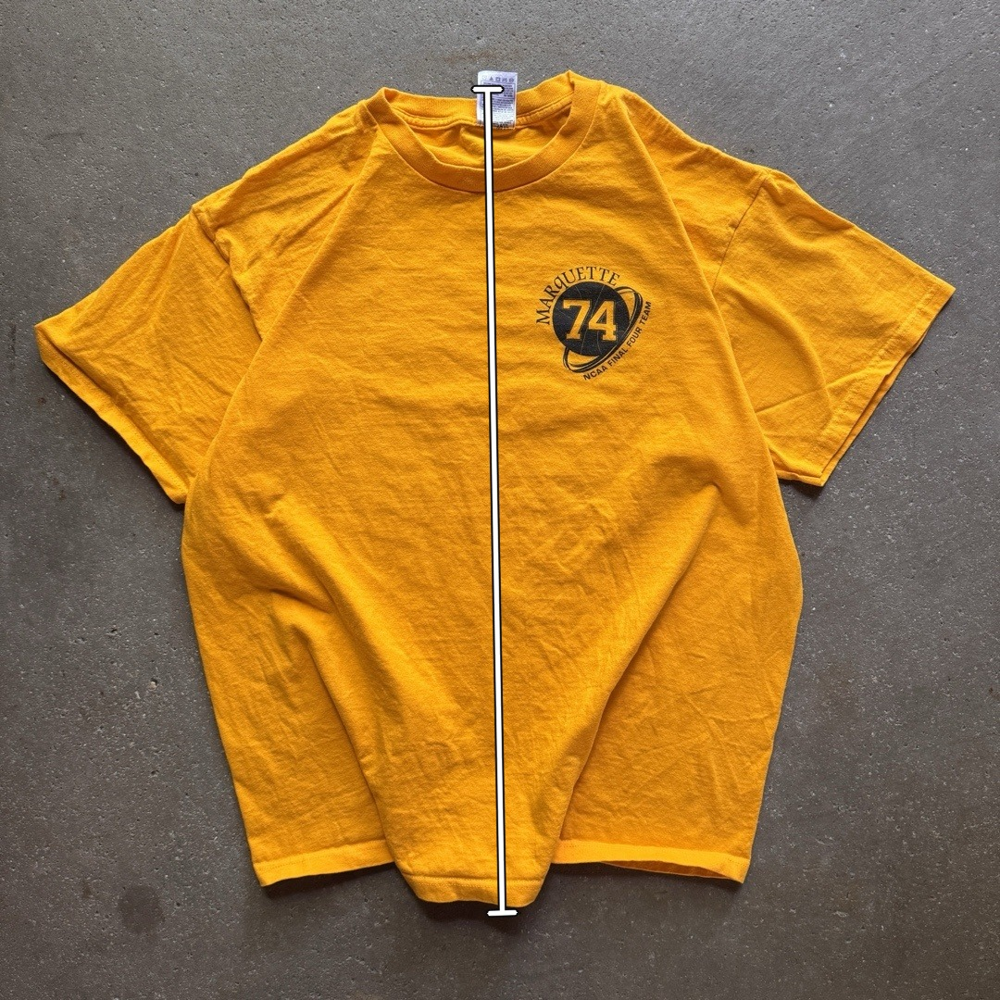

Your second hand,
for everything secondhand
Take one photo. It's priced, posted on five sites and sold for you.


Measured before it posts
Every AI photo is checked against your item's measurements before it posts. If it can't match, your real photo posts instead.



One tee so far. Across three runs, every photo that posted landed within 1.2% of the measurement.
How it works
The next section. Board 3 decides it.